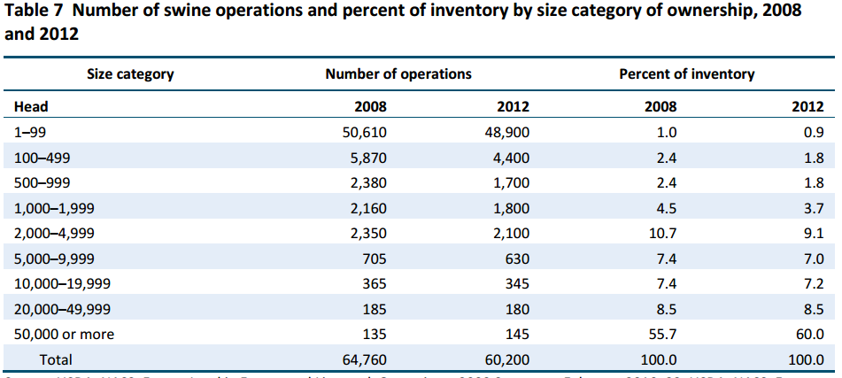

19 Hog Markets
Interested in more? Please let me know by taking the survey!
This chapter covers basic hog production, industry structure, and marketing practices, with an emphasis on how these affect hog prices. The hog market has undergone significant changes in industry organization in recent history. The industry used to be very unconcentrated with large numbers of independently owned and operated small and medium sized farms. Recently, the industry has trended toward more and more concentration in ownership, contracting and marketing agreements between owners and operators, and vertical integration in structure. This is in contrast to the beef cattle market, where ownership remains unconcentrated until the final finishing stage of produciton.
To get a sense of modern hog production practices, I recommend watching videos produced by Smithfield Foods subsidiary Muphey Brown, LLC. In the linked Youtube playlist, watch the ‘Wean-to-finish’ video, the ‘Environmental Protection’ video, and the ‘Animal Care’ video.
Smithfield Videos of Production Stages
19.1 Definitions
First, we begin by introucing specialized nomenclature used in the industry.
| Vocabulary | Definition |
|---|---|
| Various Terms | |
| Barrow | Neutered male hog |
| Boar | Unneutered male hog, usually kept for breeding |
| Feeder Pig | Young hog, 6-8 weeks old and 40-50lbs in weight |
| Gilt | Female hog that has not borne a litter |
| Market Hog | Adult hog for slaughter |
| Parity | Number of farrowings or litters that have been borne by a sow |
| Sow | Female hog that has borne at least one litter |
| Weanling | Weaned pig, typically 2-3 weeks of age and 10-15lbs in weight |
| Farrow | Birth of a piglet(s) |
| Production Systems | |
| Farrow-to-finish | Production phase that encompasses the enture life cycle of the slaughter hog from birth (farrowing) to finishing (feeding to market weight) |
| Farrow-to-wean | Produciton phase from birth through weaning at 10-15lbs (2-3 weeks old) |
| Farrow-to-feeder | Produciton phase from birth through pigs that weigh 40-50 lb |
| Wean-to-finish | Produciton phase from just weaned pigs through market weight |
| Feeder-to-finish | Produciton phase from feeder weight pigs to market weight pigs |
19.2 Gestation and Farrowing
The gestation period for a sow is 114 days or 16 weeks. Sows are usually kept in a specialized barn for farrowing where special care can be given to the sow and the new piglets. This has historically meant keeping sows in individual stalls. There has been a movement among animal rights activists to end the practice of using individual stalls and moving toward group housing for sows preparring for farrowing. This movement has prompted several large producers to change production practices and large consumers of pork to seek pork suppliers who do not use individual sow stalls. In the European Union, individual stalls are not allowed after the fourth week of pregnancy (McGlone 2013), the practice is banned in Canada, and in the US several states have banned their use. Smithfield Foods, one of the largest U.S. pork producers, has commited to converting all company owned farms to group housing for pregnant sows by 2017, and it is putting pressure on contract growers to convert as well, suggesting production contracts might not be renewed with growers who
The industry began using individual stalls because hogs are aggressive animals that will fight with, and often injure one another. If one animal recieved an injury that results in a bloody wound, the other hogs will become very aggressive and sometimes kill the wounded hog if the the wounded animal is not isolated. The individual stalls solve this problem, but they are quite cramped. Purdue University article about gestation and farrowing crates.
Sows have 8-12 pigets per litter, and the piglets stay with their mothers for 2-3 weeks before they are weaned. Sows generally have approximately 2 litters per year and breeding sows are replaced on average after 3-4 litters.
19.3 Feeding
Commercial hog operations keep feeder pigs in barns or ‘hog houses’ that hold hundreds of animals divided into smaller pens. Hogs are fed a ration of primarily corn and soybean meal. They require feed that contians a high quality protien and digestible amino acids, specifically lysine. Lysine is the amino acid that is most likely to be deficient in a corn-soybean diet, so it is usually supplemented. With the rise of ethanol production, distillers dried grains are utilized for both calories and protien, but not usually at higher than 30% of the ration. Utilizing higher proportions of distillers grains causes the carcass fat to be too soft.
19.4 Waste Management
Since a large number of hogs are housed together in close confinement, special systems to manage the waste are employed. Usually, the floors of the hog houses are slatted so the manure falls through the floor to a temporary chamber below. The waste is continually pumped to waste management lagoons located near (or under) the hog house(s).
19.5 Geography of Hog Production
Hogs historically have been produced in locations close to corn and soybean production. Corn belt states historically have been the dominant producers. Recently, production in the southeast region of the United States has increased rapidly. Figure 1 show the top 8 producing states as of 2013, with figures for 2008-2013 displayed. North Carolina is the only top hog producing state not in the corn belt.

Source: Pork and Swine Industry and Trade Summary, USITC
Figure 2 show hog and pig sales as a percent of agricultural sales.

Source: USDA NASS 2012 Census Highlights
See some Hog Production Operations in Hardin County, Iowa’s largest hog producing county.
19.6 Industry Structure
The hog industry has experienced considerable consolidation in recent history with the number of farms declining, and number of hogs per operation increasing. Along with this consolidation has been a trend away from cash sales (only 7.5 percent of sales were cash in 2010) toward forward contract pricing and marketing agreements between operators and large vertically integrated firms or owned directly by pork packers themselves (21.6 percent were raised in packer-owned operations in 2010 (gipsa10?).


Source: Pork and Swine Industry and Trade Summary, USITC
Grower operators have trended toward specializing shorter stages of the production process. For example gestation, farrowing, and weaning versus nursery or weanling feeders, versus finishing operations. Growers are typically responsible for financing the facilities and the owner, who is often a large multinational firm will provide the animals, feed, vetrenary and other expenses.
19.7 Price Determination
Although the number of cash sales has declined, forward contract prices and marketing agreements between contract growers and operators are often based on a formula with cash sales as a baseline. The majority of hogs are sold based on carcass quality characteristics, and not solely based on weight.
19.8 Lean Hogs Futures
Lean Hogs Futures Contracts on the CME
19.8.1 Why only one Contract Instead of Two like Feeder and Live Cattle?
Industry consolidation has left few firms needing to hedge risk. Futures contracts are usually successful when there are a large number of firms who have a hedging need. Only then does the futures market attract speculators who provide liquidity to the market and active trading.
Also, vertical integration of the industry means that if firms can hedge the risk of their market weight hogs, that translates all along the supply chain. Unlike cattle markets where feedlots both need to buy feeder cattle and sell fattened cattle. Hog producer can hedge market hogs with the lean hogs contract and input costs with corn and soybean meal futures contracts. No second livestock contract is needed.
19.8.2 Demise of the Frozen Pork Belly Futures Contracts
Until recently (2011), there existed a futures contract in frozen pork bellies.
Concentration in the hog industry reduced the need for the pork belly contract in part. Also, an increased trend toward year-round consumption of bacon and production of pork reduced the need to store frozen pork bellies.
19.9 Exercises
In the exercises for this chapter we will use some of the time-series econometric techniques discussed in Appendix 18 and 19. Appendix 18 discusses the log-normal price model and how first differences of logged prices are typically used when conducting a time series econometric analysis with non-statioanary price data (price data often, but not always, is non-stationary). Then Appendix 19 discusses the AR(p) regression model. This model will be successful if past returns have any significant predictive power for future returns.
Spoiler: They usually have very little predictive power. If returns were easy to predict based on several previous returns, we could all be rich. But alas, it is not easy to get rich forecasting prices.
Open up the excel file linked here containing nearby lean hogs prices from the January 2010 to November 14, 2017.
Create colum of percent returns in column C using the formula \(\ln{p_{t+1}} - \ln{p_{t}}\).
Create three lags of percent returns in columns D, E, and F. Notice that when we do the econometric estimation, we will have to start in row 6 where we have data for the return and all three lags. In econometric speak, we have lost four degrees of freedom by generating the returns, and the three lags of returns.
Click Data, then Data Analysis, then Regression, then OK.
Select column C for the Input Y Range, and columns D through F for the Input X Range from row 6 to 1976. Select Output Range somewhere near the bottom of your data. Click OK. This regression is an AR(3) since we are using three lags of percent returns to forecast price returns.
Notice that the lagged returns are not statistically significant. We will go ahead with the forecasting exercise anyway, to illustrate how it is done.
Extend the Dates through 11/21/2017. We are going to make a 7 day ahead forecast using our AR(3) model of price returns.
Extend the lags down one row into row 1977.
Next we will use the regression coeficients and the last days returns (which we just brought down to row 1977) to generate a forecast for 11/15/1977 returns based on the AR(3) model.
In C1977 put in the following formula
= Intercept + XVariable1*Return.L1 + XVariable2*Return.L2 + XVariable3*Return.L3.Then extend the formula in C through F down through row 1983. Now we have our forecasts in column C.
In columns G and H, create lower and upper 95% Confidence intervals around the forecasts.
In column G the formula for lower bound of 95% confidence interval is
= forecast + T.INV(0.025, df)*StandardErrorRegression. Which finds the 2.5 percentile of a t distribution with standard error equal to the standard error of the regression centered around the forecast value. This is the lower bound of the 95% confidence interval.In column H the formula for upper bound of the 95% confidence interbal is
= forecast - T.INV(0.025, df)*StandardErrorRegression. Which finds the 97.5 percentile ofa t distribuiton with standard error equal to the standard error of the regression centered around the forecast value. This is the upper bound of the 95% confidence interval.Plot the Actual Returns, the Forecast Returns, the Upper 95% CI, and the Lower 95% CI as separate series.
Notice how the forecast values are very close to the unconditional mean (which is nearly 0), while the confidence interval is very wide. You could not make any money trading with this forecasting model.